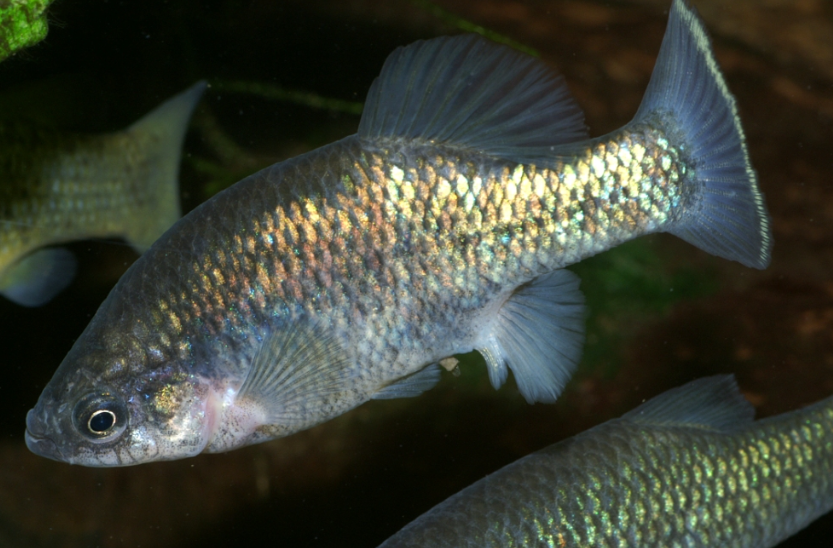

Systématique
- Ordre : Cyprinodontiformes
- Famille : Goodeidae
- Genre : Xenoophorus
- Espèce : X. captivus
- Auteur : (Hubbs, 1924)

Xenoophorus captivus est un poisson vivipare singulier, représentant unique de son genre au sein de la famille des Goodeidae. Originaire des hauts plateaux du Mexique, il se distingue par une forme de corps robuste, une tête massive et un profil dorsal nettement convexe chez les spécimens âgés.
Les mâles atteignent environ 5 cm, tandis que les femelles sont plus imposantes, pouvant atteindre 6 à 7 cm. Le patron de coloration varie selon les populations, mais consiste généralement en une base gris-olive parsemée de reflets bleutés ou verdâtres. Les mâles arborent souvent des liserés jaunes ou orangés sur les nageoires impaires, qui s'intensifient lors des parades nuptiales. Des taches sombres irrégulières peuvent également apparaître sur les flancs.
L'espèce est classée "En danger" (EN) par l'UICN. Sa distribution est extrêmement fragmentée et limitée à quelques sources et cours d'eau isolés du bassin du Rio Pánuco. Elle est très sensible aux changements environnementaux et fait l'objet de suivis rigoureux par les groupes de conservation internationaux.
Xenoophorus captivus est un poisson actif qui apprécie les eaux claires et bien oxygénées. C'est une espèce grégaire, bien que les mâles puissent faire preuve d'une territorialité marquée. Ils passent une grande partie de leur temps à établir des rapports de dominance par des parades latérales complexes, nageoires grandes ouvertes.
En aquarium, ils nécessitent un décor structuré avec des racines et des pierres pour permettre aux individus dominés de se soustraire à la vue des dominants. C'est une espèce robuste une fois acclimatée, mais elle supporte mal les eaux stagnantes ou trop chargées en déchets organiques.
Mode : Vivipare matrotrophe.
La reproduction suit le cycle biologique propre aux Goodeinae : fertilisation interne par l'andropodium et développement intra-ovarien des embryons via des trophotaeniae. La gestation est relativement longue, s'étendant sur 55 à 65 jours selon les conditions.
Les portées sont généralement de taille moyenne, produisant 10 à 25 alevins. Les nouveau-nés sont particulièrement grands et vigoureux à la naissance (environ 12-14 mm). Ils sont capables de consommer immédiatement des nauplies d'artémias ou de la nourriture fine. Le cannibalisme des parents est rare s'ils sont correctement nourris et si l'aquarium offre suffisamment de refuges végétaux.
Dimorphisme sexuel : Le mâle possède un andropodium (encoche sur la nageoire anale) et des couleurs plus contrastées. Sa nageoire dorsale est souvent plus large que celle de la femelle. La femelle est plus grande, plus massive, avec un profil ventral arrondi lors de la gestation.
Espérance de vie : 3 à 5 ans en aquarium.
L'espèce est endémique de l'État de San Luis Potosí au Mexique, principalement dans le bassin supérieur du Rio Pánuco (système du Rio Santa Maria). Elle fréquente les sources, les ruisseaux et les petites rivières à courant lent ou modéré.
L'eau y est alcaline et dure, souvent enrichie en minéraux. Les températures sont modérées (18-24 °C) et peuvent chuter en hiver en raison de l'altitude. La végétation aquatique y est présente mais souvent éparse, l'espèce se trouvant souvent à proximité de zones rocheuses ou sableuses.
Répartition

Origine naturelle :
- Mexique : État de San Luis Potosí.
- Bassin supérieur du Rio Pánuco.
- Localité type : Rio Santa Maria.
Plusieurs populations historiques ont disparu suite à l'introduction d'espèces invasives comme le Tilapia ou le Black-bass.
Paramètres de maintenance
Température : 18 à 24 °C. Éviter les températures élevées maintenues.
pH : 7,5 à 8,5.
GH : 15 à 30 °dGH (eau dure).
Courant : Moyen.
Volume conseillé : 100 L pour un groupe, avec une filtration efficace.
Régime alimentaire
Régime : Omnivore à tendance insectivore.
En aquarium, il accepte les flocons et granulés, mais une alimentation riche en proies vivantes ou congelées (vers de vase, daphnies) est cruciale pour stimuler la reproduction. Un apport végétal occasionnel (spiruline) complète utilement son régime.